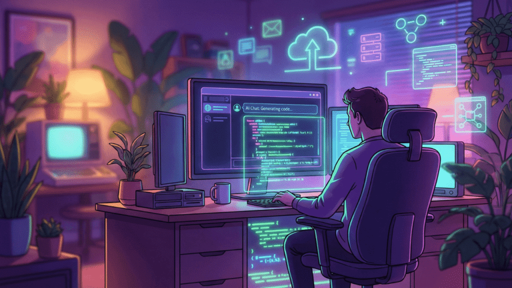

Experiências
Mostrarei somente as experiências relacionadas a área de programação, para mais informações, baixe meu currículo completo na Aba Currículo
Desenvolvedor FullStack - Web Pluguins
Auxiliar a empresa na criação e manutenção de códigos, atuando no Back-End e Front-End. Minhas Atividades eram:
• Criar / Editar páginas utilizando CSS / JAVASCRIPT • CRUD - Banco de Dados • Back-End em PHP • Documentar projetos e API's utilizadas • Versionamento com Git e GitHub
Desenvolvedor Web - Distribuidora de Bebidas
Desenvolver um Software interno de controle de mercadorias e controle das viagens dos caminhões de distribuição. Programa desenvolvido em uma equipe de
6 pessoas, divididas em Back-End, Front-End e Banco de Dados. Como responsável pela equipe de Front-End, minhas funções eram:
• Dividir Funções no Gira • Informar ao líder do projeto tópicos como atrasos, problemas e soluções • Criar telas no Canvas • Criar telas utilizando CSS/JAVASCRIPT
• Formatar campos e criar animações com JavaScript • Controle de paginação com PHP • Versionamento com Git e GitHub
Desenvolvedor Web I9 Promoções
Desenvolver um software interno para a empresa, para fazer controle de funcionários e clientes.
Programa desenvolvido em uma equipe de 6 pessoas, separar em back, front e banco de dados. Como responsável pela equipe de Front-End. minhas funções eram:
• Criar telas no Canvas • Criar as telas usando CSS/JAVASCRIPT/BOOTSTRAP • Formatar campos e criar animações com JavaScript • Controle de Paginação com PHP • Versionamento com Git e GitHub
